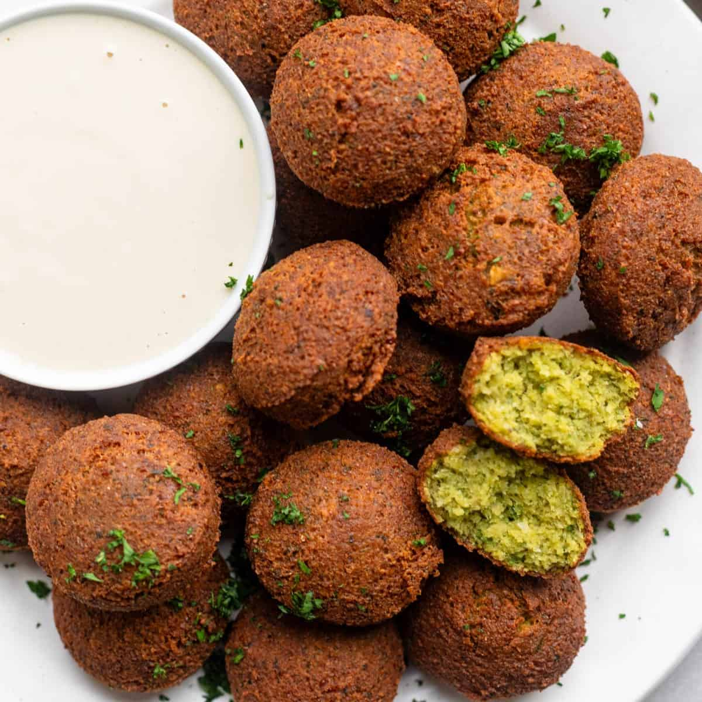

Falafel

Crispy, golden falafels made with soaked chickpeas, fresh herbs, and warm spices. Perfectly seasoned and fried to perfection, these flavorful bites are ideal for stuffing into pita, topping salads, or serving with creamy dips like hummus or tahini sauce. A simple, wholesome, and satisfying dish!
Ingredients
- 1 cup dried chickpeas (soaked overnight)
- 1 small onion, roughly chopped
- 2-3 garlic cloves
- 1/4 cup fresh parsley
- 1 tsp ground cumin
- 1 tsp ground coriander
- 1/2 tsp baking powder
- Salt and pepper to taste
- Oil for frying
Steps
- Prepare the mix: Drain the soaked chickpeas. Add them to a food processor with onion, garlic, parsley, cilantro (if using), cumin, coriander, baking powder, salt, and pepper. Blend until a coarse, crumbly mixture forms. It should hold together when pressed.
- Chill the mixture: Cover and refrigerate for about 30 minutes to firm up.
- Shape the falafels: Roll the mixture into small balls or flatten slightly into patties.
- Cook: Heat oil in a deep pan over medium heat. Fry falafels until golden brown and crispy, about 2-3 minutes per side.
- Serve: Drain on paper towels and serve warm with pita, hummus, or salad.